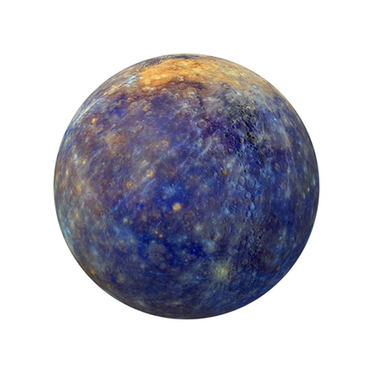

Explore Our Galaxy's
The universe is all of space and time and their contents. It comprises
all of existence, any fundamental interaction, physical process and
physical constant, and therefore all forms of energy and matter, and the
structures they form, from sub-atomic particles to entire galaxies.
Space and time, according to the prevailing cosmological theory of the
Big Bang, emerged together 13.787±0.020 billion years ago, and the
universe has been expanding ever since. Today the universe has expanded
into an age and size that is physically only in parts observable as the
observable universe, which is approximately 93 billion light-years in
diameter at the present day, while the spatial size, if any, of the
entire universe is unknown..Read More
Sun
The Sun is the star at the center of the Solar System. It is a
massive, hot ball of plasma, inflated and heated by energy
produced by nuclear fusion reactions at its core. Part of this
energy is emitted from its surface as light, ultraviolet, and
infrared radiation, providing most of the energy for life on
Earth. The Sun has been an object of veneration in many cultures.
It has been a central subject for astronomical research since
ancient times..read more
Mercury
Mercury is the first planet from the Sun and the smallest in the
Solar System. In English, it is named after the Roman god
Mercurius (Mercury), god of commerce and communication, and the
messenger of the gods. Mercury is classified as a terrestrial
planet, with roughly the same surface gravity as Mars. The surface
of Mercury is heavily cratered, as a result of countless impact
events that have accumulated over billions of years. Its largest
crater, Caloris Planitia, has a diameter of 1,550 km (960 mi) and
one-third the diameter of the planet (4,880 km or 3,030 mi).
Similarly to the Earth's Moon, Mercury's surface displays an
expansive rupes system generated from thrust faults and bright ray
systems formed by impact event remnants..read more
Venus
Venus is the second planet from the Sun. It is a rocky planet with
the densest atmosphere of all the rocky bodies in the Solar
System, and the closest in mass and size to its orbital neighbour
Earth. Orbiting inferiorly (inside of Earth's orbit), it always
appears close to the Sun in Earth's sky, as either a "morning
star" or an "evening star". While this is also true for Mercury,
Venus appears more prominent, since it is the third brightest
object in Earth's sky after the Moon and the Sun. Venus has
historically been a common and important object for humans, in
both their cultures and astronomy..read more
Moon
The Moon is Earth's only natural satellite. It orbits at an
average distance of 384,400 km (238,900 mi), about 30 times
Earth's diameter. The Moon always presents the same side to Earth,
because gravitational pull has locked its rotation to the planet.
This results in the lunar day of 29.5 Earth days matching the
lunar month. The Moon's gravitational pull and to a lesser extent
the Sun's are the main drivers of the tides..read more
Earth
Earth is the third planet from the Sun and the only astronomical
object known to harbor life. This is enabled by Earth being a
water world, the only one in the Solar System sustaining liquid
surface water. Almost all of Earth's water is contained in its
global ocean, covering 70.8% of Earth's crust. The remaining 29.2%
of Earth's crust is land, most of which is located in the form of
continental landmasses within one hemisphere, Earth's land
hemisphere. Most of Earth's land is somewhat humid and covered by
vegetation, while large sheets of ice at Earth's polar deserts
retain more water than Earth's groundwater, lakes, rivers and
atmospheric water combined. Earth's crust consists of slowly
moving tectonic plates, which interact to produce mountain ranges,
volcanoes, and earthquakes. Earth has a liquid outer core that
generates a magnetosphere capable of deflecting most of the
destructive solar winds and cosmic radiation..read more
Mars
Mars is the fourth planet from the Sun. The surface of Mars is
orange-red because it is covered in iron(III) oxide dust, giving
it the nickname "the Red Planet". Mars is among the brightest
objects in Earth's sky and its high-contrast albedo features have
made it a common subject for telescope viewing. It is classified
as a terrestrial planet and is the second smallest of the Solar
System's planets with a diameter of 6,779 km (4,212 mi). In terms
of orbital motion, a Martian solar day (sol) is equal to 24.5
hours and a Martian solar year is equal to 1.88 Earth years (687
Earth days). Mars has two natural satellites that are small and
irregular in shape: Phobos and Deimos..read more
Jupiter
Jupiter is the fifth planet from the Sun and the largest in the
Solar System. It is a gas giant with a mass more than two and a
half times that of all the other planets in the Solar System
combined, and slightly less than one one-thousandth the mass of
the Sun. Jupiter orbits the Sun at a distance of 5.20 AU (778.5
Gm) with an orbital period of 11.86 years. Jupiter is the third
brightest natural object in the Earth's night sky after the Moon
and Venus, and it has been observed since prehistoric times. It
was named after Jupiter, the chief deity of ancient Roman
religion..read more
Saturn
Saturn is the sixth planet from the Sun and the second-largest in
the Solar System, after Jupiter. It is a gas giant with an average
radius of about nine-and-a-half times that of Earth. It has only
one-eighth the average density of Earth, but is over 95 times more
massive. Even though Saturn is nearly the size of Jupiter, Saturn
has less than one-third of Jupiter's mass. Saturn orbits the Sun
at a distance of 9.59 AU (1,434 million km) with an orbital period
of 29.45 years..read more
Uranus
Uranus is the seventh planet from the Sun. It is a gaseous
cyan-coloured ice giant. Most of the planet is made of water,
ammonia, and methane in a supercritical phase of matter, which in
astronomy is called 'ice' or volatiles. The planet's atmosphere
has a complex layered cloud structure and has the lowest minimum
temperature of 49 K (−224 °C; −371 °F) out of all the Solar
System's planets. It has a marked axial tilt of 82.23° with a
retrograde rotation period of 17 hours and 14 minutes. This means
that in an 84-Earth-year orbital period around the Sun, its poles
get around 42 years of continuous sunlight, followed by 42 years
of continuous darkness..read more
Neptune
Neptune is the eighth and farthest known planet from the Sun. It
is the fourth-largest planet in the Solar System by diameter, the
third-most-massive planet, and the densest giant planet. It is 17
times the mass of Earth, and slightly more massive than fellow ice
giant Uranus. Neptune is denser and physically smaller than Uranus
because its greater mass causes more gravitational compression of
its atmosphere. Being composed primarily of gases and liquids, it
has no well-defined solid surface. The planet orbits the Sun once
every 164.8 years at an orbital distance of 30.1 astronomical
units (4.5 billion kilometers; 2.8 billion miles). It is named
after the Roman god of the sea and has the astronomical symbol ♆,
representing Neptune's trident..read more

